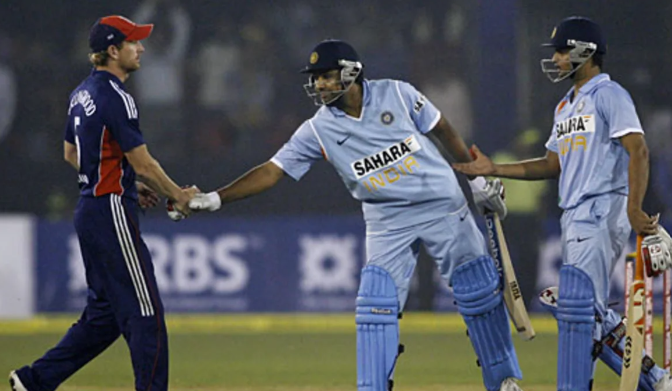

Timeline of MS Dhoni

December 23, 2004 - Makes his ODI debut against Bangladesh in Chittagong. Is run out for 0 after facing one ball, in a match India win by 11 runs.
April 5, 2005 - The first ODI hundred by an Indian wicketkeeper. After scores of 0, 12, 7* and 3, is sent up the order to No 3 against Pakistan in Visakhapatnam and proceeds to smash 148 off 123 balls with 15 fours and four sixes, setting the platform for India's 356/9. The world wakes up to Dhoni's potential.

October 31, 2005 - Dhoni stamps himself into the history books with a record 183* against Sri Lanka in Jaipur, helping India chase 301 with six wickets and 23 deliveries to spare. Batting at No 3, his 145-ball hundred makes a stiff target look well short and India go up 3-0 in the best-of-seven series.
September 13, 2007 - Dhoni's first international match in charge of India is a wash out against Scotland in their ICC World Twenty20 opener. Few could have predicted how India's tournament will pan out.

September 24, 2007 - India win the inaugural World Twenty20 by beating Pakistan in an absolute humdinger in Johannesburg. Dhoni is an overnight sensation once more and the landscape of T20 cricket is changed forever.
October 2, 2007 - In the next match in Kochi, Dhoni scores his first fifty as captain - 58 off 88 balls - as India are beaten by 84 runs to fall behind 0-1 in the seven-match series.
November 15, 2007 - First ODI series win for Dhoni as captain, as India beat Pakistan by six wickets in Gwalior to take the lead 3-1 in the best-of-five series. His contribution? An unbeaten 45 off 45 balls as 256 is chased with six wickets in hand.
March 4, 2008 - A momentous occasion for India as they win their first ODI series in Australia. The landmark comes in the second final of the CB Series, which India win by nine runs to make it 2-0.

November 26, 2008 - Dhoni's first 5-0 sweep of any team. Victory by six wickets in Cuttack whitewashes Kevin Pietersen's England.
March 11, 2009 - Dhoni becomes the first Indian captain to win an ODI series in New Zealand. A whirlwind century from Virender Sehwag seals a ten-wicket win in Hamilton.
February 24, 2010 - India win a three-match series at home over South Africa, riding on Sachin Tendulkar's record-setting 200*. Dhoni injects 68 off 35 balls to a total of 401/3.
June 24, 2010 - India lift the Asia Cup under Dhoni, beating Sri Lanka by 81 runs in Dambulla.
April 2, 2011 - India win the World Cup after 28 years, with the skipper hitting the winning runs with a six. Promoting himself up the order, Dhoni shrugs off his poor run in the tournament with the innings of his life: 91* off 79 balls.
October 25, 2011 - India salvage some pride with a 5-0 win over England when Alastair Cook's team visit. Dhoni is Player of the Series.
June 23, 2013 - Dhoni marshals his troops superbly to lead India to a narrow five-run win in the final of the Champions Trophy over hosts England, thus becoming the first captain to hold all three of the ICC's major titles.
September 2, 2014 - A sliver of brightness for India away from home. They beat England by nine wickets in Birmingham to win the ODI leg of another difficult tour.

March 23, 2016 - Dhoni's coolness and ability to back players under immense pressure is to the fore in Bangalore, where Bangladesh are beaten by one run during the World Twenty20. Dhoni helps India pull off an incredible heist.
January 4, 2017 - Announces that he is giving up the captaincy, but remains available for selection for the upcoming England series.